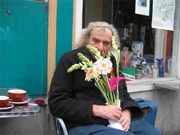
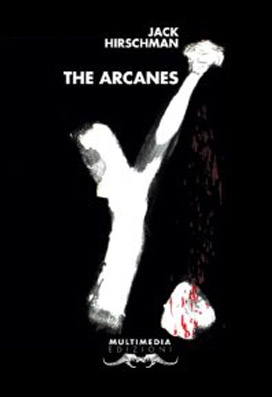
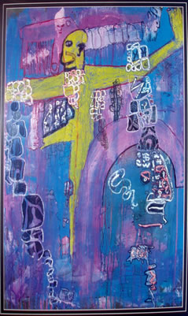

Poet Laureate of San Francisco, Jack Hirshman, outside of Caffe Trieste--April 2006

His
most ambitious work, a 1,000-page compilation called
"Arcanes," published by the Italian
publisher Casa della Poesia. Critics have compared it to William Carlos Williams'
"Patterson" and Ezra Pound's "Cantos."
Posted
on Sun, Jun. 04, 2006 (exerpt) Beat Generation dwindles,
but Hirschman remains JUSTIN M. NORTON, Associated Press
For
more info and to order: http://www.casadellapoesia.org/thearcanes/

Painting by Jack Hirschman
Jack Hirschman The Open Gate
In memory of Jack Micheline, Poet
When I came to San Francisco
the street was Jack
I write this on the #19 as it passes
the now non-existent Donuts ‘n Things
on Polk and California Streets
Where during the war we talked
of poets here and in the Soviet Union
before going to Minnie Can Do’s
over on Fillmore to do our things,
or headed to North Beach for
the wild venues there.
Later I learned the street was more
than Jack. It was Jack, and few of us
had much of it; and we saw poor
palms opening everywhere, the war
had broken many, and the rats in power,
and the cockroach landlords.
Jack lived for the walk,
for the open gate inside
where the prisoner hears the strain
of Mingus or Monk, and sings free
along the storefronts and to
the windows of the world.
The bohemian was dead, but he said:
Long Live the Bohemian!
The poets were canned or clowned
or given microphones to suck on
but he cried: Long Live the Poets!
Those he envied and decried for having
made it beat in the literary world
he was right about: they really
weren’t street, and street was where
the Poet had to be, or street would be
ruled by dead spores and fascisti.
He had a memory,
A bottle of chianti,
A gypsy-jewish fire burning in him
all the way back to black Pushkin,
had the con the hustle the scrounge the wail
to survive in a world where blood money
rigged up everybody’s sails,
all that to keep the gate open inside
for the poem to blow as a hurricane
for the paint to animal and child.
Old buddy of the Word, those guts you kept
like a holy ark of sparks bursting into flame
you pass on into all of us now bereft
— the hip, the dudes, the chicks, the dames —
We ask a doll, we ask a dish, Rimbaud,
Mayakowsky, Kerouac and all
The streethearts gathered here:
wasn’t that a matzoh in the teeth of homeless fate?
wasn’t that a Poet made of bright and shining tears?
Poet Laureate, San Francisco 2006, author of The Arcane, Jack Hirschman is one of the first poets at the international level to adhere to the project of Casa della Poesia (House of Poetry), and he is a poet renowned in the world for his coherency, generosity and courage, besides being an extraordinary poet. The Arcanes represent, in the vast poetic production of Jack Hirschman, an important and extraordinary instrument, the most advanced point of his searching. It involves long compositions in which the writing both excites and liberates, in which his consciousness, sensitivities, obsessions and his loves all flow together. They develop a political engagement and social themes that are ever present in his poetry with respect to personal events.